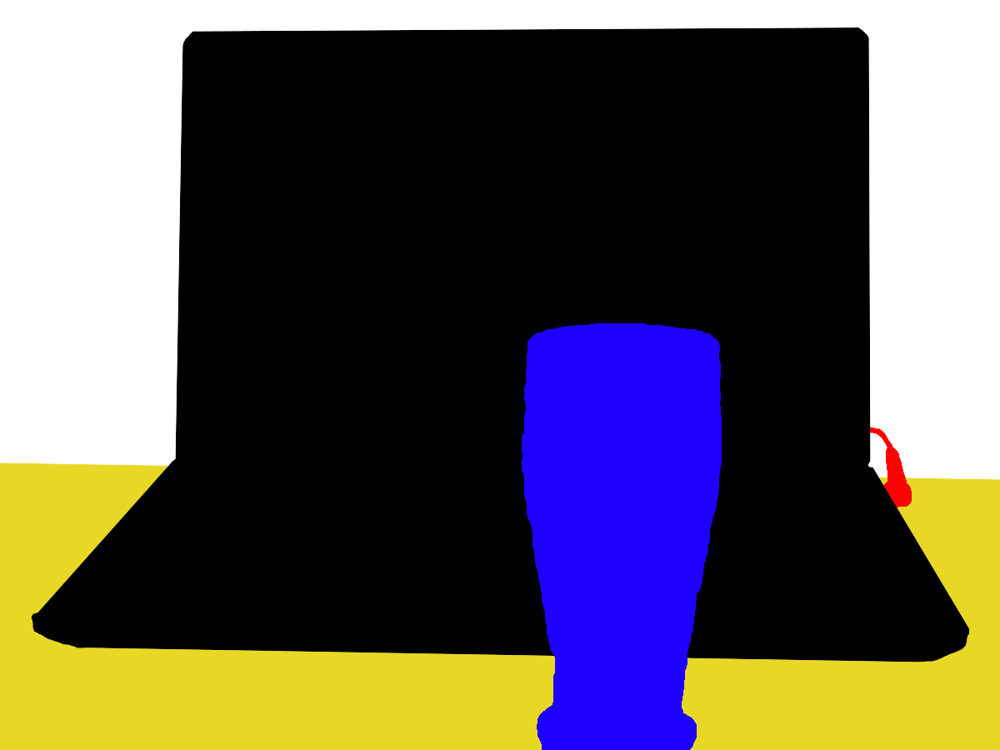
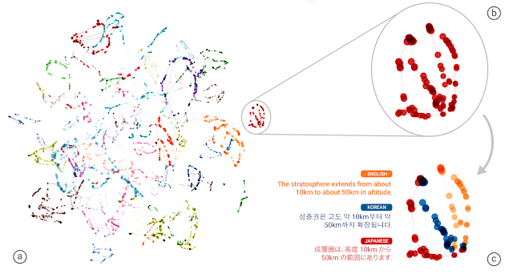
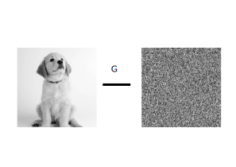
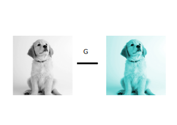
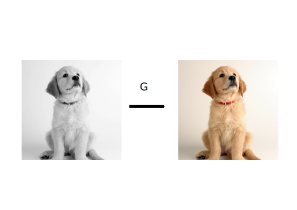
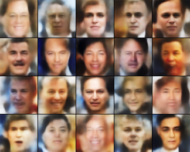
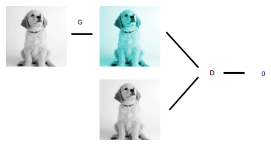
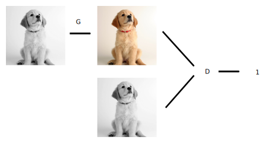

Traduire des images sans données d'entraînement
Human Talks
Mardi 10 avril 2018
Yours truly
- Hugo Mougard
- Indépendant — Brave Bots, ML Week
- Co-organise le ML meetup
- Formation, consulting & dev en Machine Learning
Contexte
Machine Learning
Programmation implicite

Réseaux de neurones
- 1 neurone = somme pondérée d'inputs
- 1 neurone = calcul très simple
- 10M neurones = calcul complexe
Deep Learning
Réseaux de neurones profondsDeep Learning
Computer Vision
Deep Learning
Natural Language Processing
Tâche
Traduction d'images
Méthode
Première approche
- utiliser un réseau d'images
- donner des images en entrée
- sortir leur traduction en sortie
- entraîner le réseau en réduisant ses erreurs
Générateur
Générateur
Générateur
Difficile ?
Difficile de mesurer explicitement la qualité d'une traduction.
Mesure explicite
Images floues en résultat : Retour du comeback de l'implicite
Modèle implicite et mesure implicite de la qualité
→ Réseaux d'images pour mesurer la qualité
Générateur + discriminateur
Générateur + discriminateur

Deuxième approche
Sans les données !
Idée
Traduire deux fois doit ramener à l'entrée
Cheval vers zèbre

https://hardikbansal.github.io/CycleGANBlog/
Zèbre vers cheval

https://hardikbansal.github.io/CycleGANBlog/